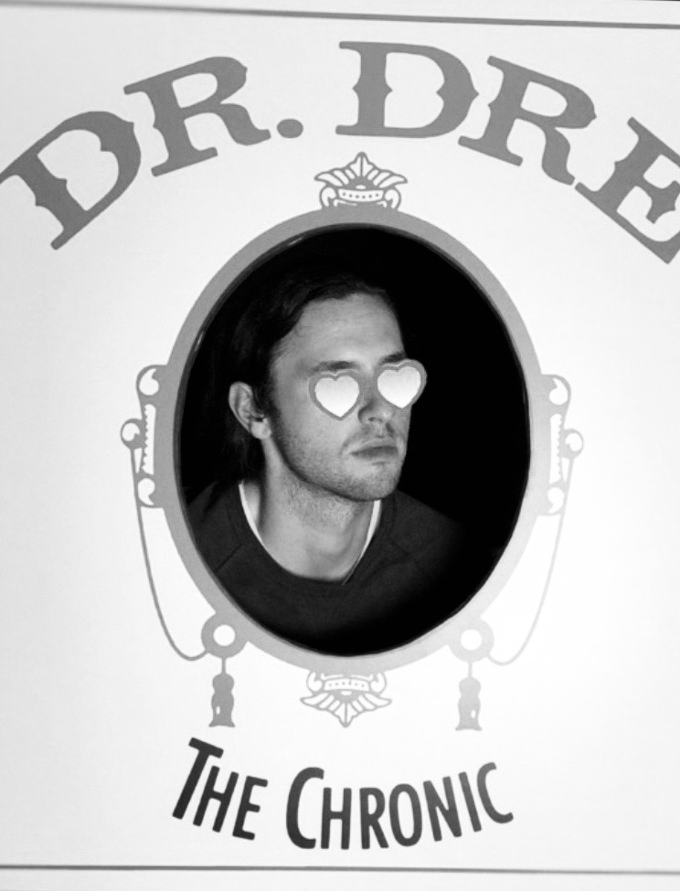

Eric Bartos
About Me

Let's get crazy. With something so strong, a little bit can go a long way. Be careful. You can always add more - but you can't take it away. Remember how free clouds are. They just lay around in the sky all day long. We tell people sometimes: we're like drug dealers, come into town and get everybody absolutely addicted to painting. It doesn't take much to get you addicted. You don't have to spend all your time thinking about what you're doing, you just let it happen. This is truly an almighty mountain.
And just raise cain. La- da- da- da- dah. Just be happy. But please do not let this extensive clarification distract you from the fact that in 1998, The Undertaker threw Mankind off Hell In A Cell, and plummeted 16 ft through an announcer’s table.